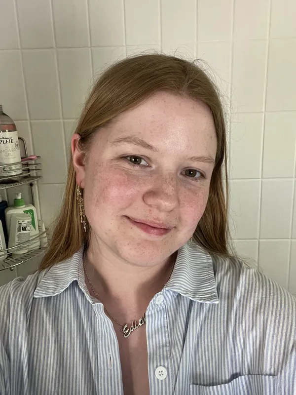

Sign up til mit nyhedsbrev:
udfyld nedestående bokse

Før jeg begyndte på multimediedesignuddannelsen, studerede jeg på HHX i Næstved. Efter gymnasiet havde jeg to sabbatår, hvor jeg arbejdede i forskellige kundeservicerelaterede stillinger.
Herefter fulgte en længere periode på næsten et år, hvor jeg aktivt søgte arbejde og overvejede mine fremtidige uddannelses- og karrieremuligheder. For lidt over et år siden startede jeg en YouTube-kanal, hvilket længe havde været en
personlig drøm.
Arbejdet med kanalen vækkede min interesse for digitalt indhold, sociale medier og de tekniske processer bag, og det blev i sidste ende en af de vigtigste årsager til, at jeg valgte at søge ind på
multimediedesignuddannelsen. Da jeg begyndte på uddannelsen, havde jeg ingen erfaring med programmering. Min oprindelige motivation var primært at lære mere om sociale medier, content creation og digital kommunikation.
Derfor blev jeg positivt overrasket over, hvor meget interesse jeg udviklede for kodning allerede i løbet af første semester. Jeg har fundet programmering både spændende og motiverende, og jeg er blevet overrasket over, hvor naturligt læringsprocessen har føltes det meste af tiden. Uddannelsen har dog ikke været uden udfordringer. Jeg har oplevet, hvordan selv små fejl i kode kan have stor betydning for det endelige resultat, og jeg har skullet tilegne mig helt nye arbejdsmetoder og måder at tænke på. Disse udfordringer har bidraget til en betydelig faglig og personlig udvikling gennem første semester. Samlet set er jeg meget tilfreds med de projekter, jeg har arbejdet på, og med den viden og de kompetencer, jeg har opnået.
Jeg har ikke kun lært meget om multimediedesign, digitale medier og programmering, men også fået en bedre forståelse af mine egne styrker, interesser og muligheder for fremtiden.
udfyld nedestående bokse